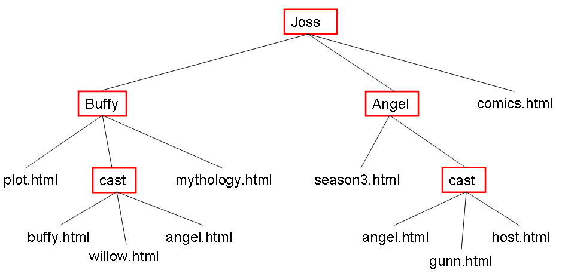

By the end of today, you will be able to:
We'll use clickers today. Your instructor will show you which clicker you will use (we won't post them globally)
Just to get us warmed up, let's start with some quiz questions. You are encouraged to ask me questions as well. This is not a test.
HTML is about
behavior
style and presentation
structure, content and meaning
all of the above
You would create a hyperlink like this:
<a src="http://www.google.com">Search</a>
<link src="http://www.google.com">Search</link>
<a href="http://www.google.com">Search</a>
<link href="http://www.google.com">Search</link>
You would create an image like this:
<img src="http://www.lolcats.com/images/u/13/39/tastegood.jpg">
<img ref="http://www.lolcats.com/images/u/13/39/tastegood.jpg">
<img href="http://www.lolcats.com/images/u/13/39/tastegood.jpg">
<img dst="http://www.lolcats.com/images/u/13/39/tastegood.jpg">
Why is ALT required in an image? (the above examples all fail to do so)
So that people can hover over an image and get additional info
So that a caption is created
So that some text can be presented if the person can't see the image
So that the image will be properly sized
Things like A and IMG are called
tags
elements
attributes
properties
Things like HREF and SRC are called
tags
elements
attributes
properties
The difference between an element and a tag is
a tag contains an element
tags have attributes but elements don't
an element is made out of tags and attributes
none of the above
With code like this:
<article>
<h2>Pies</h2>
<p>fruit pies
<ol>
<li>apple
<li>banana
<li>coconut
</ol>
</article>
the OL is nested inside the paragraph
the article is the parent of the LI elements
the article contains all the other elements
it's all delicious
Semantic tags like ARTICLE
are intended to replace meaningless tags like DIV.
are intended to make the structure of the document more clear.
are newer and shinier than the old tags.
all of the above.
How can I insert a comment in an HTML document?
With <!-- marks like this -->
With /* marks like this */
With // marks like this
With <comment> marks like this </comment>
Why insert comments into an HTML document?
To remind the reader about what something means or does
To keep track of changes
To temporarily remove stuff you don't want right now
To put in info like author and date
All of the above
Why do we validate an HTML document?
To make sure it follows all the structural rules of HTML
To help find bugs
To help the document be understood by all browsers
All of the above
Please do the following, to remind you how to successfully create and upload a file. See the first lab if you want to review the pictures and screenshots.
template.
basic-template.html in
the template folder.
You can view that local file in your browser.
Now let's copy it to the server.
template folder to
the public_html
You've now successfully uploaded a file. You will be able to view the file in a web browser using the following URL pattern, substituting your CS username where it's indicated:
http://cs.wellesley.edu/~USERNAME/template/basic-template.html
If your username/password doesn't work, contact CS-SysAdmin@wellesley.edu and, in the meantime, use one of the cs110 guest accounts: cs110a, cs110b, or cs110c.
The WWW consists of billions of interconnected web pages, and those
interconnections are made by hyperlinks, created by
the <A> tag, with the href
attribute. The interconnections on the web are not physical
connections (like telephone wires and computer cables) but
are virtual. You are literally creating part of the web when
you build a web page and link to others (and others link to you).
Key to hyperlinks is the URL, a globally unique address for a page. We turn to now to that concept.
Which of the following is not a kind of URL:
absolute
relative
fragment
None of the above
A website is a pretty intuitive notion for your generation, so I won't try to define it. The different pages of a website will naturally connect to one another using URLs, and those URLs should be relative URLs, not absolute. This is because a website sometimes moves to another server (say, from cs.wellesley.edu to a server that your client has rented space on) and since an absolute URL necessarily mentions the server that the site is on, all of those URLs become incorrect, while relative URLs still work.
Let's consider the following structure:

How would you create a link from buffy.html to willow.html with
the clickable text being "her best friend"
<a href="../willow.html">her best friend</a>
<a href="Buffy/cast/willow.html">her best friend</a>
<a href="/Joss/Buffy/cast/willow.html">her best friend</a>
<a href="willow.html">her best friend</a>
From now on, we'll just ask for URLs
What relative URL would you give from plot.html to mythology.html?
../Buffy/mythology.html
Buffy/mythology.html
/mythology.html
mythology.html
What relative URL would you give from plot.html to buffy.html?
../Buffy/cast/buffy.html
cast/buffy.html
/cast/buffy.html
buffy.html
What relative URL would you give from buffy.html to plot.html?
../Buffy/plot.html
../plot.html
../../Buffy/plot.html
../../plot.html
What relative URL would you give from buffy.html to gunn.html?
../../../Joss/Angel/cast/gunn.html
../../Joss/Angel/cast/gunn.html
../../Angel/cast/gunn.html
../Angel/cast/gunn.html
Sometimes, we want to address an element of a webpage, rather than
the whole page. This is something like telling a friend to read the
chapter on Peeta in this book
instead of just telling them to read
the whole book.
To do so, we need to give an id to the target of the URL, and that part of the URL is called a fragment, since the destination is a fragment (element) of a page.
Suppose in our file called hungergames.html, we have
some section headers like this:
...
<h2 id="Katnis">
...
<h2 id="Peeta">
...
<h2 id="Gale">
...
How would the URL taking us to Peeta look? Assume our source is in the same directory.
hungergames.html?Peeta
hungergames.html#Peeta
hungergames.html/Peeta
hungergames.html&Peeta
Write down the HTML for a table of contents to put at the top of
the hungergames.html file.
We hope that after these activities you have a good understanding of:
Will be posted later, visit again after .
Answers to clicker questions:
1. C
2. C
3. A
4. C (A is true, but not the reason)
5. A
6. C
7. C
8. C (A is false because the paragraph implicitly ends at the OL;
B is false because the parent of the LI elements is the OL;
D is false because there is coconut. yuck!)
9. D
10. A
11. E
12. D
13. D, they're all kinds of URL
14. D
15. D
16. B
17. B
18. C
19. B
Here's the solution to the Table of Contents exercise:
<ul>
<li><a href="#Katniss">Katniss</a>
<li><a href="#Peeta">Peeta</a>
<li><a href="#Gale">Gale</a>
</ul>